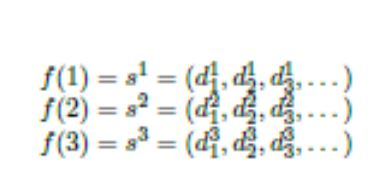

Introduction to Set Theory
- Sets
- Functions
- Sequences and Summations
7.5 hours
a. Discuss the Introduction to Set Theory
b. Solve the problems in sets, functions, and sequences and summations
Discrete mathematics deals with objects that come in discrete bundles, e.g., 1 or 2 babies. In contrast, continuous mathematics deals with objects that vary continuously, e.g., 3.42 inches from a wall. Think of digital watches versus analog watches (ones where the second hand loops around continuously without stopping).
Why study discrete mathematics in computer science? It does not directly help us write programs. At the same time, it is the mathematics underlying almost all of computer science. Here are a few examples:
Discrete mathematics uses a range of techniques, some of which is seldom found in its continuous counterpart. This course will roughly cover the following topics and specific applications in computer science.
A set is one of the most fundamental object in mathematics.
SET, INFORMAL. A set is an unordered collections of objects. Our definition is informal because we do not define what a collection" is; a deeper study of sets is out of the scope of this course.
Example 1. The following notations all refer to the same set:
{1, 2}, {2, 1}, {1, 2, 1, 2}, {x │ x is an integer; 1 ≤ x ≤ 2}
The last example read as \the set of all x such that x is an integer between 1 and 2 (inclusive)".
We will encounter the following sets and notations throughout the course:
Ø = { }, the empty set.
N = {0, 1, 2, 3, ...}, the non-negative integers
N+ = {0, 1, 2, 3, ...}, the positive integers
Z = {..., -2, -1, 0, 1, 2, ...}, the integers
Q = {q │ q = a/b, a, b ∈ Z, b ≠ 0}, the rational numbers
Q+ = {q │ q ∈ Q, q > 0}, the positive rational numbers/p>
R, the real numbers
R+, the positive reals
Given a collection of objects (a set), we may want to know how large is the collection.
SET CARDINALITY. The cardinality of a set A is the number of (distinct) objects in A, written as │A│. When │A│ ∈ N (a finite integer), A is a finite set; otherwise A is an infinite set. We discuss the cardinality of infinite sets later.
Example 2. │{1, 2, 3}│= │{1, 2, {1, 2}}│ = 3
Given two collections of objects (two sets), we may want to know if they are equal, or if one collection contains the other. These notions are formalized as set equality and subsets.
SET EQUALITY. Two sets S and T are equal, written as S = T, if S and T contains exactly the same elements, i.e., for every x, x ∈ S ↔ x ∈ T.
SUBSETS. A set S is a subset of set T, written as S ⊆ T, if every element in S is also in T, i.e., for every x, x ∈ S → x ∈ T. Set S is a strict subset of T, written as S ⊂ T if S ⊆ T, and there exist some element x ∈ T such that x ∈/ S.
Example 3.
Finally, it is time to formalize operations on sets. Given two collection of objects, we may want to merge the collections (set union), identify the objects in common (set intersection), or identify the objects unique to one collection (set difference). We may also be interested in knowing all possible ways of picking one object from each collection (Cartesian product), or all possible ways of picking some objects from just one of the collections (power set).
SET OPERATIONS. Given sets S and T, we define the following operations:
Example 4.
Let S = {1, 2, 3}, T = {3, 4}, V = {a, b}. Then:
Some set operations can be visualized using Venn diagrams.
To give an example of working with these set operations, consider thefollowing set identity.
THEOREM 1. For all sets S and T, S = (S ∩T) ∪(S −T).
Proof. We can visualize the set identity using Venn diagrams (see Figure 1.1b and 1.1c). To formally prove the identity, we will show both of the following:
S ⊆(S ∩T) ∪(S −T) (1.1)
(S ∩T) ∪(S −T) ⊆S (1.2)
To prove (1.1), consider any element x ∈S. Either x ∈T or x ∈/ T.
To prove (1.2), consider any x ∈ (S ∩T) ∪(S −T). Either x ∈ S ∩T or x ∈S −T
In computer science, we frequently use the following additional notation(these notation can be viewed as short hands):
Given a set S and a natural number n ∈N,
Sn is the set of length n “strings” (equivalently n-tuples) with alphabet
S. Formally we define it as the product of n copies of S (i.e., S ×S × ··· × S).
Commonly seen set includes {0, 1}n as the set of n-bit strings, {0, 1}* as the set of finite length bit strings. Also observe that │ [n] │ = n.
Before we end this section, let us revisit our informal definition of sets: an unordered “collection” of objects. In 1091, Russel came up with the following 'set”, known as Russel 's paradox 1:
S = {x |x ∉ x}
That is, S is the set of all sets that don't contain themselves as an element.This might seem like a natural “collection”, but is S ∈ S? It's not hard to see that S ∈ S ↔ S ∉ S. The conclusion today is that S is not a good “collection” of objects; it is not a set.
So how will know if {x │ x satisfies some condition} is a set? Formally, sets can be defined axiomatically where only collections constructed from a careful list of rules are considered sets. This is outside the scope of this course. We will take a short cut, and restrict our attention to well − behaved universe. Let E be all the objects that we are interested in (numbers, letters, etc.), and let U = E ∪ P (E) ∪ P (P (E)) i.e., E, subsets of E and subsets of subsets of E. In fact, we may extend with three power set operations, or indeed any finite numberof power set operations. Then, S = x │ x and some condition holds is always a set.
A function f : S → T is a “mapping” from elements in set S to elements in set T. formally, f is a relation on S and T such that for each s ∈ S there exists a unique t ∈ T such that (s, t) ∈ R. S is the domain of f , and T is the range of f . {y |y = f(x) for some x ∈S}is the image of f .
We often think of a function as being characterized by an algebraic formula, e.g., y = 3x 2 characterizes the function f (x) = 3x 2. Not all formulas characterizes a function, e.g. x 2 + y2 = 1 is a relation (a circle) that is not a function (no unique y for each x). Some functions are also not easily characterized by an algebraic expression, e.g., the function mapping past datesto recorded weather.
INJECTION. f : S →T is injective (one-to-one) if for every t ∈ T , there exists at most one s ∈ S such that f (s) = t, Equivalently, f is injective if whenever s /= s, we have f(s) /= f(s).
Example 1.
SURJECTION. f : S T is surjective (onto) if the image of f equals its range. Equivalently, for every t T , there exists some s S such that f(s) = t.
Example 2.
BIJECTION. f : S T is bijective, or a one-to-one corre- spondence, if it is injective and surjective.
See Figure 1.3 for an illustration of injections, surjections, and bijections.
INVERSE RELATION. Given a function f : S → T , the inverse relation f −1 on T and S is defined by (t, s) ∈f −1 if and only if f(s) = t.
If f is bijective, then f −1 is a function (unique inverse for each t). Similarly, if f is injective, then f −1 is a also function if we restrict the domain of f −1 to be the image of f . Often an easy way to show that a function is one-to-one isto exhibit such an inverse mapping. In both these cases, f −1(f (x)) = x.
Bijections are very useful for showing that two sets have the same numberof elements. If f : S → T is a bijection and S and T are finite sets, then |S|= |T |. In fact, we will extend this definition to infinite sets as well.
SET CARDINALITY. Let S and T be two potentially infinite sets. S and T have the same cardinality, written as |S|= |T|, if there exists a bijection f : S →T (equivalently, if there exists a bijection fJ : T →S). T has cardinality at larger or equal to S, written as |S|≤|T |, if there exists an injection g : S →T (equivalently, if there exists a surjection g J: T →S).
To “intuitively justify” Set Cardinality, see Figure 1.3. The next theorem shows that this definition of cardinality corresponds well with our intuition for size: if both sets are at least as large as the other, then they have the same cardinality.
THEOREM 1. (Cantor-Bernstein-Schroeder). If |S| ≤ |T | and |T | ≤ |S|, then |S|= |T |. In other words, given injective maps, g : S →T and h : T →S, we can construct a bijection f : S → T.
We omit the proof of Theorem 1; interested readers can easily find multiple flavors of proofs online. Set cardinality is much more interesting when the sets are infinite. The cardinality of the natural numbers is extra special, since you can “count” the numbers. (It is also the “smallest infinite set”, a notion that is outside the scope of this course.)
A set S is countable if it is finite or has the same cardinality as N+. Equivalently, S is countable if |S|≤|N+|.
Example
THEOREM 2. The set of positive rational numbers Q+ are countable.
Proof. Q+ is clearly not finite, so we need a way to count Q+. Note that double counting, triple counting, even counting some element infinite many times is okay, as long as we eventually count all of Q+. I.e., we implicitly construct a surjection f : N+ → Q+.
Let us count in the following way. We first order the rational numbersp/q by the value of p + q; then we break ties by ordering according to p. The ordering then looks like this:
Implicitly, we have f (1) = 1/1, f = ½, f (3) = 2/1, etc. Clearly, f is a surjection. See Figure 1.4 for an illustration of f.

THEOREM 3.There exists sets that are not countable.
Proof. Here we use Cantor's diagonlization argument. Let S be the set of infinite sequences (d1, d2,) over digits {0, 1}. Clearly S is infinite. To show that there cannot be a bijection with N+, we proceed by contradiction.Suppose f : N + → S is a bijection. We can then enumerate these strings using f, producing a 2-dimensional table of digits:
Now consider s* = (1 - d1 1 , 1 - d2 2 , 1 - d3 3 , ...), i.e., we are taking the diagonal of the above table, and flipping all the digits. Then for any n, s* is different from sn in the nth digit. This contradicts the fact that f is a bijection.
THEOREM 4. The real interval [0, 1] (the set of real numbers between 0 and1, inclusive) is uncountable.
Proof. We will show that [0, 1] S , where S is the same set as in the proof of Theorem 3. Treat each s = (d1, d2, . . . ∈) S as the real number between 0 and 1 with the binary expansion 0.d1, d2 . Note that this does not establish a bijection; some real numbers have two binary expansions, e.g., not establish a bijection; some real numbers have two binary expnsions, e.g, 0.1 = 0.0111 (similarly, in decimal expansion, we have 0.1 = 0.0999 2).
We may overcome this “annoyance” in two ways:
A major open problem in mathematics (it was one of Hilbert's 23 famous problems listed 1900)
was whether there exists some set whose cardinality is between N and R (can you show that R
has the same cardinality as [0, 1]?).
Here is a naive candidate: P(N). Unfortunately, P(N) has the same cardinality as [0, 1]. Note
that every element S ∈ P(N) corresponds to an infinitely long sequence over digits {0, 1} (the nth digit
is 1 if and only if the number n ∈S). Again, we arrive at the set S in the proof of Theorem 3.
The Continuum Hypothesis states that no such set exists. Godel and Cohen together showed (in
1940 and 1963) that tis can neither be proved nor disproved using the standard axioms underlying
mathematics.
A sequence is a discrete structure used to represent an ordered list. A sequence is a function
from a subset of the set of integers (usually either the set {0,1,2,. . .} or {1,2, 3,. . .}to a set S.
We use the notation an to denote the image of the integer n. We call an a term of the sequence.
Notation to represent sequence is {an}
Example 1.
| Arithmetic | a, atd, at+2d, at3d, at4d, ... |
| n2 | 1, 4, 9, 16, 25,... |
| n3 | 1, 8, 27, 64, 125,... |
| n4 | 1, 8, 27, 64, 125,... |
| 2n | 2, 4, 8, 16, 32,... |
| 3n | 3,9, 27, 81, 243,... |
| n! | 1, 2, 6, 24, 120,... |
am, am+1, . . ., an from the sequence, {an}